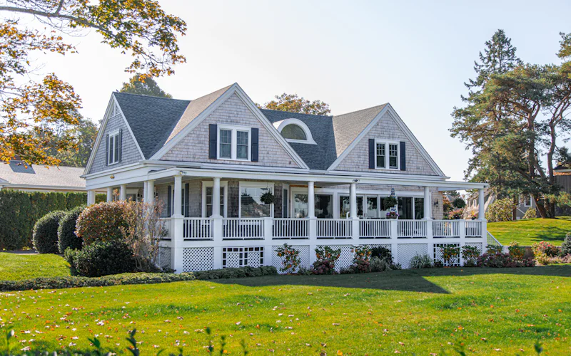

A Stable Place to Live
A comfortable, furnished home where you can settle in, rest, and build a steady daily routine without worrying about where you'll sleep tonight.
Serving Katy, Texas
Serving the Katy, Texas area, Legacy Independent Living offers a stable, supportive home for adults ready to rebuild. Our residence is just a short drive from Katy in neighboring Fulshear — close enough to keep your job, your meetings, and your family connections while you establish a steady, independent routine.
Katy residents choose Legacy for its calm setting, clear structure, and genuine community. From our Fulshear home you stay connected to Katy's employers, recovery resources, and the wider Fort Bend and west-Houston area — without the noise and instability that can derail a fresh start.
At Legacy you'll find a substance-free environment, clear house guidelines, peer accountability, and help connecting to employment, recovery, and community resources — everything you need to turn a fresh start into lasting independence. Live well. Live independently. Live legacy.
What We Offer Katy Residents
A comfortable, furnished home where you can settle in, rest, and build a steady daily routine without worrying about where you'll sleep tonight.
Clear house guidelines and gentle structure that help you stay on track, keep commitments, and rebuild trust — with yourself and others.
A drug- and alcohol-free home that protects your progress and gives everyone the calm, safe footing they need to move forward.
Live alongside others who understand the journey. Peer encouragement and accountability make the hard days easier and the wins shared.
We help connect you to employment, recovery support, ID and benefits, transportation, and the local resources that turn a fresh start into lasting independence.
Run your own life, manage your own goals, and grow at your own pace — with help close by whenever you need it.

Our Home
Our residence sits in a quiet Fulshear neighborhood in Fort Bend County — close to work, recovery meetings, transit, and the everyday rhythms of normal life. It is a real home: comfortable, clean, and built for steady, dignified living.
We keep the home well cared for and the community respectful, so every resident has the stability they need to focus on what comes next.
Reach out today and we'll help you understand whether Legacy is the right fit for your move forward in the Katy area.
Nearby Areas We Serve